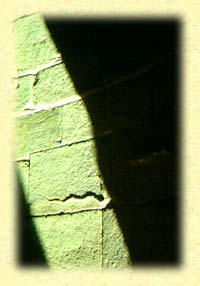

Etymological roots are indicated by the sign ç.
Language groups are as follows: SKT: Sanscrt; E: Egyptian; HB: Hebrew; GK:
Greek; L: Latin; AS: Anglo Saxon; ME: Middle English; OHG: Old High
German; G: German; OFR: Old French; FR: French; IT: Italian; ICL:
Icelandic; N: Nordic; SW: Swedish.
 Scale - L: scala = step: explicit manifestation of proportion; link, ladder; scandere = to climb; SK: scand = jump, ascend (descend, scan, escalate); HB: alah = ascend, scale, from çHUL = relational material extension; above, below, beside, etc.; all that increases, extends, arises; HB: pelec from palac = to roll flat, weigh, ponder, balance, revolve - from pala = separate, distinguish, judge, accomplish; palag = divide; peluggah = section, division; palah = differentiate, set apart; pelek = be round, circuit, spindle, staff; all from çPHL = distinction, privilege, choice. GK: skalenos = crooked, uneven (cf. skew); OFR: escale; SW: skaal = bowl, curved shell for measuring or weighing. çSEG = cut, cleave; L: secare = to cut; AS: saga = saw (scythe, section, segment, sickle). çSQEI = shine, cf. SK: chhaya = shade. çSKHEI/çSKHEIT = cleave, part, shed; L: scindere = cleave (schism). çSQEL = differentiate, distinguish, separate, divide, cleave, discern, discriminate; GK: skallein = to hoe. çSQER = shear, score, cut, cleave; GK: keirein; AS: sceran/scoren (sharp, scarp, scrape). çSQAP/SCAB = dig, scrape, shave; GK: scaptein = dig, scapane = spade; L: scabere = scrape. çSQEU = cover, shelter; SK: sku = cover; GK: skutos; L: cutis = skin; L: obscurus = covered over, dark; OHG: skiura = shed, stable; ICL: sky = cloud.